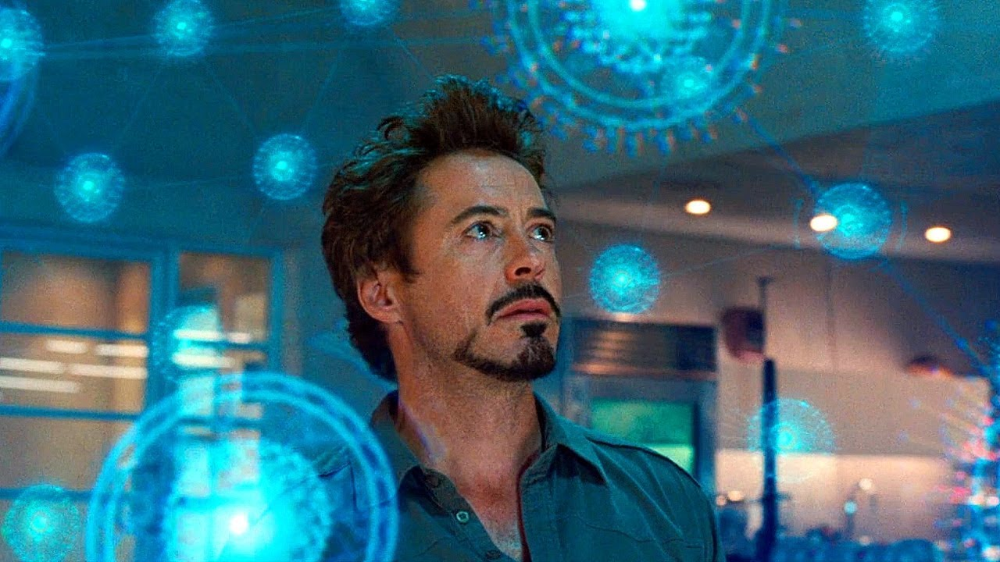
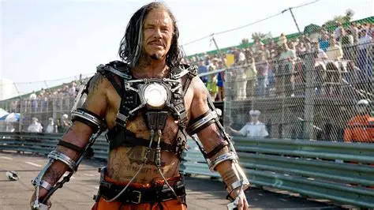

トニー・スターク / アイアンマン
合金のスーツと共に空を飛ぶアイアンマン
自らがアイアンマンであると公言してから半年。アーマーの動力源であるパラジウムによりトニーの身体は蝕まれていく。
「私がアイアンマンだ。スーツと私は、一体です。アイアンマンスーツを差し出すというのは私自身を差し出す事。即ち、身体を売る事に等しい。」
ジェームズ・ローズ / ウォーマシン
空軍中佐。職業軍人
胸のリアクターの毒素に身体を蝕まれ、自暴自棄になって暴走しかけていたトニーをアイアンマンスーツMark IIを装着して制止する。
「.....次は最初からそれ出せよ。」
ペッパー・ポッツ
スターク・インダストリーズ新CEO
トニーに振り回されまくる。イチゴアレルギー。トニーから突然会社を引き継がされ、CEOとして法的な戦いやハマー社の嫌がらせに対処する。
「普通の人はバッテリーで動いてないわ。」

イワン・ヴァンコ / ウィップラッシュ
復讐のエンジニア // SYSTEM HACKER
ジャスティン・ハマーの協力により死を偽装しドローン型スーツを開発。陸海空軍ドローンとウォーマシンをハッキングしトニーを襲う。
「はっはっは！スターク！貴様の負けだ！」